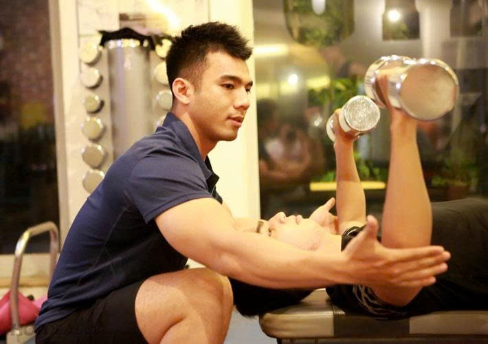

Một trong những nhu cầu tất yếu hiện nay là về sức khỏe của con người; không dừng tại đó, con người còn có nhu cầu về chăm sóc sắc đẹp thể hình; đó là về mặt cá nhân. Còn đối với xã hội hiện đại, thể dục thể thao là một trong những thước đo thể hiện tầm phát triển của địa phương - của quốc gia đó.
Nói về thể dục thể thao, các bạn có thể hiểu sơ lược là nhóm ngành mà trong đó người học rèn luyện với cường độ cao về mặt thể chất và các kỹ năng liên quan đến hoạt động thể chất. Trong đó bao gồm rất nhiều phương hướng tập luyện cụ thể khác nhau nhưng đều với điểm chung nhất là mức độ thành thục về kỹ năng - sức khỏe và sự thẩm mỹ.
Quá trình học của ngành Thể dục Thể thao được định hướng ngay từ thời gian đầu bước vào phòng thi. Ngoài việc thi 2 môn văn hóa là Toán, Sinh theo đề thi THPT QG của Bộ GDĐT thì còn phải dự thi môn Năng khiếu. Trước khi bước vào môn thi năng khiếu các thí sinh phải qua kiểm tra thể hình. Nếu có chiều cao thấp, thiếu cân nặng hoặc có dị tật, dị hình... thí sinh sẽ bị trừ điểm môn Năng khiếu thể thao khi chưa nhân hệ số 2. Quy định về thể hình khi dự thi vào trường như sau: Có thể hình cân đối, sức khoẻ và thể lực tốt, không bị dị tật, dị hình; đảm bảo học tập và công tác TDTT lâu dài. Chiều cao tối thiểu đối với nam là 165cm, cân nặng: 45kg; đối với nữ là 155cm, cân nặng: 40kg. Môn thi năng khiếu gồm 2 phần: Phần thi năng khiếu chung và phần thi năng khiếu chuyên môn. Mỗi phần thi có điểm tối đa là 5. Điểm thi môn năng khiếu là tổng điểm của hai phần thi.
Thí sinh bắt buộc phải dự thi 2 nội dung sau:
- Bật xa tại chỗ bằng 2 chân (cm): Thí sinh thực hiện 2 lần, lấy thành tích cao nhất. Thí sinh thực hiện đứng tại chỗ bằng 2 chân trên ván giậm nhảy (không vượt qua mép trên của ván) và bật về phía trước (rơi xuống hố cát bằng 2 chân), xác định thành tích từ điểm rơi gần nhất cho tới mép trên của ván giậm nhảy (thước đo vuông góc với ván).
- Chạy luồn cọc (s) (cự ly 30m cả đi và về ): Thí sinh thực hiện 1 lần. Chạy 15m luồn qua 5 cọc; quay lại chạy thẳng về đích (từ vạch xuất phát đến cọc thứ nhất là 7m, mỗi cọc cách nhau 2m). Phạm quy: Không được tính thành tích khi không luồn cọc. Bị trừ 0,25 điểm nếu: Làm đổ 1 cọc.
Thí sinh tự chọn chỉ 1 trong 14 ngành sau:
1. Điền Kinh:
- Bật xa 3 bước tại chỗ (cm): thực hiện 2 lần, lấy thành tích xa nhất. Thí sinh đứng tại chỗ bằng 2 chân trên ván giậm nhảy (không nhảy qua mép trên của ván) và bật về phía trước tiếp đất bằng 1 chân rồi chuyển bước thứ 2 bằng chân kia bước cuối cùng rơi xuống hố cát bằng 2 chân, xác định thành tích từ điểm rơi gần nhất cho tới mép trên của ván giậm nhảy.(thước đo vuông góc với ván)
- Chạy 100m: Thực hiện 1 lần ở tư thế xuất phát cao theo ô chạy.
3.Bơi lội:
- Bơi 50m 1 kiểu bơi tự chọn, tính thành tích (s).
- Kiểm tra độ dẻo khớp vai:
Cách thức thực hiện: nắm 2 đầu gậy thể dục quay tay từ sau ra trước và ngược lại càng hẹp càng tốt (cm). Yêu cầu không được co khớp khuỷu.
4.Bóng Đá:
- Đá bóng xa trong hành lang 10m (m): Bóng đặt cố định, mỗi thí sinh được đá 2 lần. Thành tích được tính bằng điểm rơi của bóng chạm đất trong hành lang 10m (lấy thành tích tốt nhất trong 2 lần đá). Thí sinh đá bằng bất cứ kỹ thuật nào trừ đá bằng mũi bàn chân.